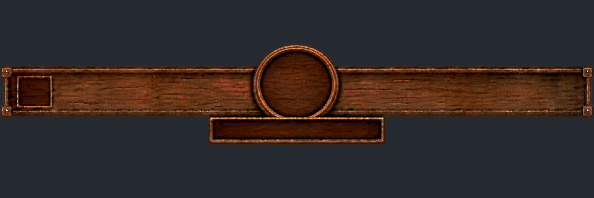
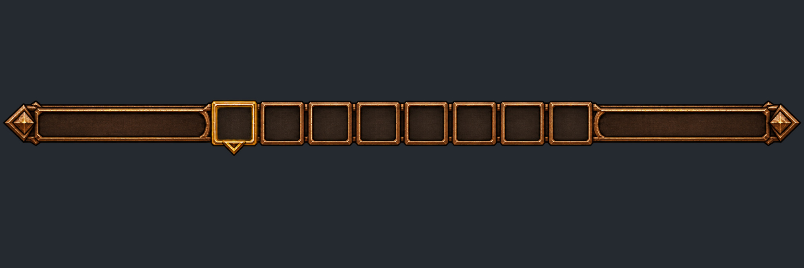
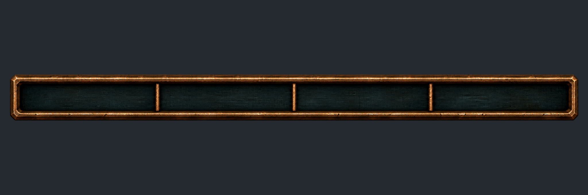
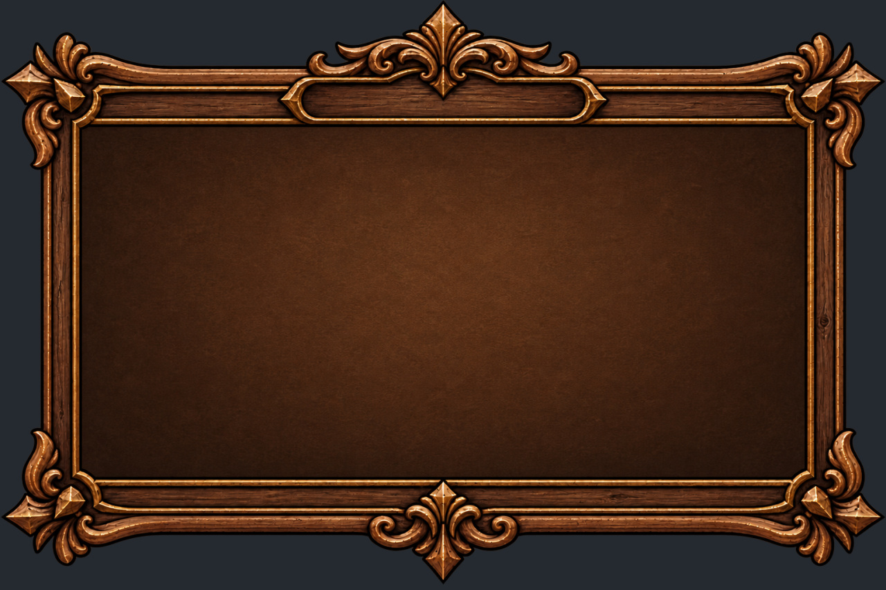
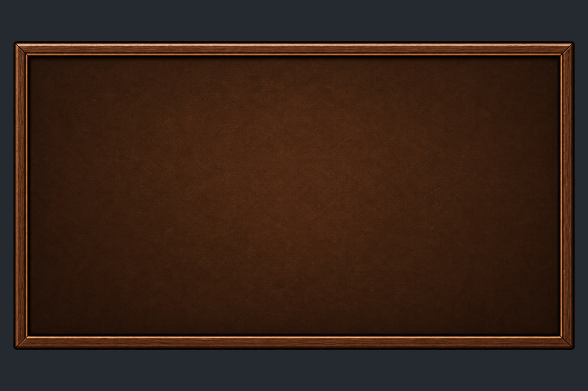
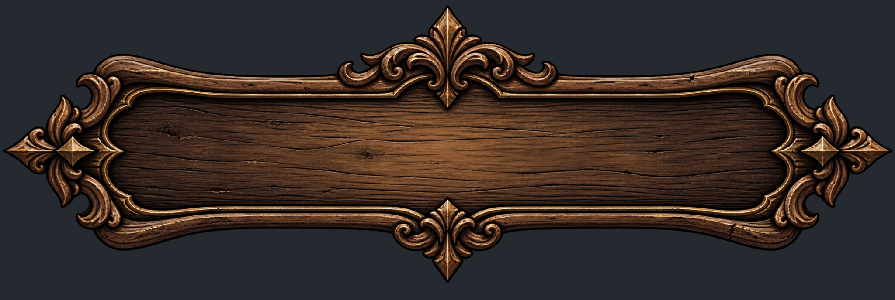
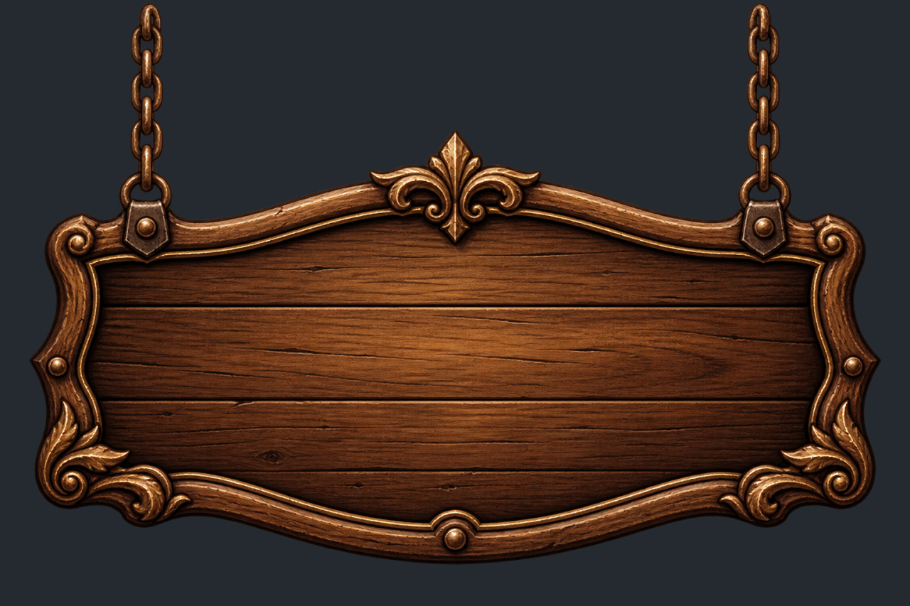

| 누구에게 | 무엇을 | 왜 | 쪽 |
|---|---|---|---|
| 기획 | 설명서 내용 중 확정 기획·게임과 다른 7가지 + 기존 UI 확인 2가지 결정 | 설명서대로 바꾸면 이미 확정·구현한 규칙이 바뀌거나, 게임에 없는 기능(낮·밤, 플레이어 이름)을 새로 만들어야 함 | 2장 |
| 디자인 | 노션 이미지 14장을 배경이 투명한 PNG로 다시 보내기 | 받은 JPG는 배경이 회색으로 채워져 있어 게임에 넣으면 네모난 회색 판이 그대로 보임 | 3장 |
| 디자인 | 아직 없는 그림 (초상화·상태 아이콘·소모품 아이콘·전투 버튼 등) | 지금 게임은 그 자리를 글자나 단색 도형으로 표시 중 | 4장 |
| 개발 | 받은 아이콘 44종을 바로 적용 (규칙 변화 없는 그림 교체) | — | 1장 |
읽는 법: P1 1차(1막 런던) 완성에 필요 · P2 있으면 좋음(마무리 기간) · P3 2막 이후 · 받음 이미 있음. 화면 사진은 모두 지금 게임(1920×1080)에서 찍은 것입니다.
배경이 투명한 PNG라 게임에 그대로 쓸 수 있습니다. 개발이 아래 자리에 넣습니다 (게임 규칙은 바뀌지 않음).
+ HP·MP 막대(Z38·Z39), 보관용(피의 흔적 조각 Z31·Z32, 턴 시계 Z40~Z44), 피의 흔적(Z01)·적 행동(Z19). 설명서에는 128/256/512 크기 3종이라고 되어 있지만 받은 폴더에는 512 크기 1종만 있었음 — 게임에서 줄여 쓰므로 문제없음.
사용 설명서는 "후속 사용자 지시"를 근거로 몇 가지를 바꿨는데, 개발이 받은 확정 기획과 다르거나 게임에 없는 기능입니다. 개발이 짐작해서 정하지 않도록, 아래 질문에 답을 부탁드립니다.

지금 게임 (10/26 지도 칸 확정안대로): 도착하면 [이용]/[지나가기]. 살아 있는 파티원 전원 HP·MP 30% + 집중력 1 회복, 칸마다 1회.
설명서: 우물 그림으로 통일하고 살아 있는 1명을 골라 집중력 +1. "전원 HP/MP 30%는 적용하지 않는다".

지금 게임: 상단 왼쪽 빨간 10칸 = 피의 흔적. 다 차면 "사신이 가까워진다" → 피의 사냥(사신이 쫓아옴)이 시작됨. 플레이어가 위험을 미리 아는 유일한 표시.
설명서: 상단 10칸 삭제. 피의 흔적 아이콘(Z01)은 경고창·도움말에서만.
지금 게임: 가운데 원(위 사진)은 "아군 턴 / 적 턴 + 라운드 숫자". 게임에 낮·밤 개념이 없음.
설명서: 가운데 원에 해(아침·낮)/달(저녁·새벽). 턴 시계 조각은 보관. "낮밤 전환 주기는 이번 자료에서 정하지 않는다".
지금 게임: 이름 입력이 없음. 그 자리에 파티장 직업명("명탐정")과 "파티장"이 표시됨.
설명서: 파티장 초상 오른쪽에 플레이어 이름. 이름과 직업명은 구분.

지금 게임: 처치한 적 칸·사용한 칸은 어두운 색으로 남아 "이미 끝난 곳"을 구분.
설명서: 승리한 적 칸·받은 보물 칸은 일반 칸과 똑같이. 퇴각·몰래 지나간 칸은 적 표식 유지(지금과 같음).

지금 게임: 이번 라운드 + 다음 라운드(흐리게, "R3 예상")를 이어서 최대 10칸. 초상 아래 속도 숫자, ↑↓ 화살표 (10/26 속도 확정안).
받은 틀(N04): 가운데 초상 칸 8개가 그림에 붙어 있음. 설명서: "그림을 늘리지 말고 칸 부분을 반복".
지금 게임: 런던 적 칸 10곳 = 역병 쥐·연성 독거미·가고일·그림자 사냥개 조합(10/26 확정). 받은 지도 표식은 사냥개(Z24) 1종. 설명서도 "쥐·거미·가고일 칸까지 사냥개 얼굴로 통일하지 않는다".

지금 게임: 대화 창에 이름·대사만 있음. 이번에 점술마녀·제임스·아벨 모로 인물 그림(N18~N20)을 받음.

지금 게임: 조우 창에 칸의 대표 적 1마리만 보이고, 전투에 들어가면 조합 전체(예: 쥐 2 + 가고일 1)가 나옴.
왜 필요한가: 받은 노션 이미지 N01~N20은 JPG라서 투명한 부분이 짙은 회색(#252A30)으로 채워져 있습니다. 아래는 상단 배너(N07) JPG를 지금 게임 화면에 그대로 올려 본 모습입니다 — 빨간 테두리 안의 회색 네모 판이 게임 화면을 가립니다. 설명서도 "JPG는 확인·공유용이며 게임 UI의 투명 PNG를 대체하지 않는다"고 적고 있습니다.


N07 상단 배너
N04 타임라인 틀 (Q6: 칸 조각 분리)
N05 영혼 게이지 틀 · N06 채움
N08 메뉴 창 바깥
N09 메뉴 창 안쪽
N14~N17 버튼 4상태
N11 패배 · N12 승리 표지판| 번호 | 그림 | 게임에서 쓰는 곳 (지금 화면) | 우선 |
|---|---|---|---|
| N07 | 상단 배너 | 보드 화면 맨 위 (지금: 단색 판) | P1 |
| N01·N02 | 달·해 | 상단 가운데 원 — Q3 답에 따라 | P1 |
| N04 | 타임라인 틀 | 전투 맨 위 행동 순서 — 칸 1개 조각 + 좌우 끝 장식 분리 (Q6) | P1 |
| N05·N06 | 영혼 게이지 틀·채움 | 상단 오른쪽 영혼 흡수 막대 | P1 |
| N08·N09 | 메뉴 창 바깥·안쪽 | 상점·인벤토리·설정·사건 기록·이벤트·Esc 메뉴 (지금: 단색 테두리 창) | P1 |
| N14~N17 | 버튼 기본·강조·비활성·눌림 | 모든 버튼 (지금: 단색 버튼) | P1 |
| N11·N12 | 패배·승리 표지판 | 전투 결과 창 제목 (지금 화면) | P1 |
| N18~N20 | 대화 인물 | 대화 창 (Q8) — JPG로도 사용 가능, 투명이면 더 좋음 | P2 |
| N13 | 낮밤 전환 배너 | 설명서상 보류 | P3 |
지금 게임은 아래 자리를 글자나 단색 도형으로 표시하고 있습니다. 형식은 받은 아이콘과 같게 512×512 투명 PNG면 됩니다.
| 분류 | 필요한 그림 | 게임에서 쓰는 곳 (지금 화면) | 개수 | 우선 |
|---|---|---|---|---|
| 초상화 | 명탐정 · 역병 의사 · 저격수 | 파티 카드, 타임라인, 상단 파티장 칸, 파티 구성 (지금: 임시 인형) | 3 | P1 |
| 초상화 | 역병 쥐 · 연성 독거미 유체 · 가고일 유체 · 그림자 사냥개 · 인조 그림자 사신 · 검시관 아벨 모로 | 적 HP 막대, 타임라인, 조우 창 | 6 | P1 |
| 지도 표식 | 적 칸 공용 표식 (또는 쥐·거미·가고일 3종 — Q7) | 보드 적 칸 (지금: 주황 칸) | 1~3 | P1 |
| 파티 카드 | 카드 틀 1장 (초상·이름·HP/MP·능력치·집중력·퀵 슬롯이 들어가는 판) | 화면 아래 3장 (지금 화면) | 1 | P1 |
| 전투 버튼 | 공격 · 스킬 · 소모품 · 방어 · 부활 · 퇴각 · 추가 집중 | 전투 행동 메뉴 (지금: 글자 버튼) | 7 | P1 |
| 상태 아이콘 | 약한 출혈 · 중독 · 혼란 · 속박 · 속도 감소 · 속도 증가(신속의 앰플) · 공격력 감소 · 방어 감소 · 회피 해제 · 영점 조정 | 파티 카드·적 HP 막대의 상태 칸 (지금: "속↑2" 같은 글자) | 10 | P1 |
| 소모품 | 집중의 향초 · 지혈 연고 · 정신 안정 염 · 성수 · 휴대 수리 도구 · 룬 기관차 탑승권 · 탈출권 · 연금술 시약 · 연금술 화염병 · 안개 연막병 · 안개 야영 세트 · 생명의 월계관 · 신속의 앰플 | 런던 상점·인벤토리·퀵 슬롯 (받은 것: 붕대·생명·마력·해독제 4종) | 13 | P1 |
| 이벤트 | 점술마녀 카드 앞면 3종 (부·회복·집중) | 점술마녀 창 (지금: 기호 ₵ ♥ ◆) | 3 | P2 |
| 표식 | 파티장 표식 (1번 캐릭터) | 파티 카드·파티 구성 | 1 | P2 |
| 장비 | 무기 10계열 · 방어구·장신구 | 인벤토리·상점 (지금: 이름 글자) | 약 15 | P2 |
| 지도 | 베르사유 궁전 · 제국 광장 거점 | 2막·3막 보드 | 2 | P3 |
| 순서 | 누가 | 할 일 | 희망 날짜 |
|---|---|---|---|
| 1 | 개발 | 받은 아이콘 44종 적용 (능력치·LP·레벨·집중력·퀵 슬롯·HP/MP 막대·Cent·영혼·의뢰·직업·지도 표식) | 바로 |
| 2 | 기획 | 2장 Q1~Q9 답변 (특히 Q1~Q3은 상단 화면 구성이 걸려 있음) | 10/30 |
| 3 | 디자인 | 3장 투명 PNG 원본 14장 + 4장 P1 그림 | 11/7 |
| 4 | 개발 | 받는 대로 교체 → 화면 캡처로 확인 결과 공유 | 받은 다음 날 |
| 5 | 모두 | 마무리 기간 플레이 확인 | 11/8~11/18 |
근거: 아이콘·UI 사용 설명서(2026-10-26, Docs/Art/Fantasia_Icon_Usage_Guide.pdf), 지도 칸 확정안(Docs/Planning/MapTiles.md), 속도 확정안(Docs/Planning/Speed.md), 이전 요청 목록(Docs/Art/Fantasia_에셋_UI_요청목록_2026-10-25.pdf) · 게임 화면 전체: Docs/Images/UI/